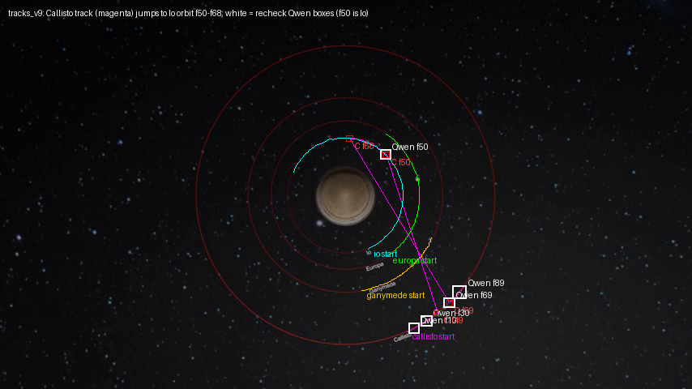
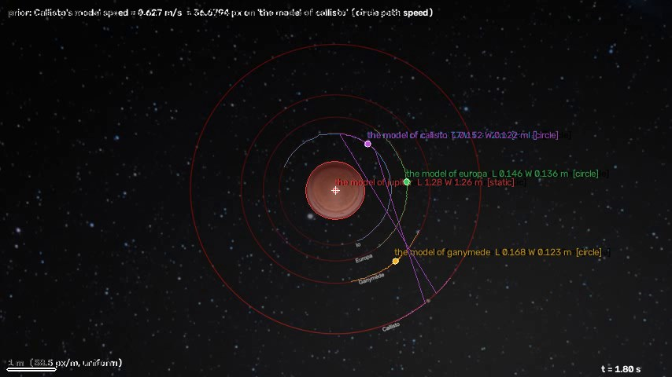
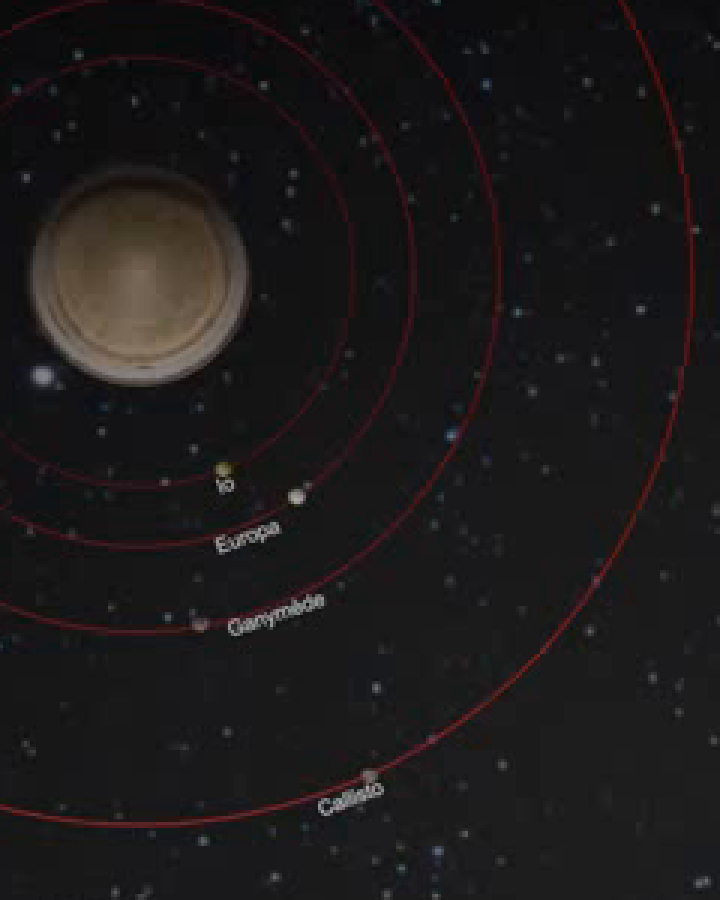

← 视频与问题 · 评估员逐视频报告（由 outputs/eval/*.md 生成）
主因层：跟踪（perceive._recheck 用了一个认错的 Qwen 框重跟 prior 物体）→ 尺度（scene2d 把身份切换的那段也算进 prior 像素速度）；其次是小物体的尺寸量法（scene2d extent） 根因：tracks_v9 里 Callisto 的轨迹在 f50–f68 跳到了 Io 上（复核时 Qwen 在 f50 框中了 Io）。scene2d 把这段 r=71.8 px、ω=−1.17 的"圆周段"按时长加权算进 Callisto 的路径速度，得到 36.68 px/s，正确值约 27.1，于是 m/px 偏小 27%，8 道长度/速度题全部掉到 0.7。卫星直径题现在答对，只是两个误差恰好抵消：掩码 hull 8 px 比实际约 5.5–6 px 大 1.36 倍，正好抵掉尺度偏小的 0.73 倍。
simulation_0193（木星四卫星轨道模型，12 题 D2，prior "Callisto's model speed = 0.627 m/s"）
数据：逐题 outputs/val_mh3_valfinal_routed.csv（与 valcur7 一致）；2D 场景 outputs/scene2d_eval/s2d_v6_v9/simulation_0193.json（s2d_mh3_valfinal 用 tracks_v9p，数值相同）；跟踪 outputs/tracks_v9/simulation_0193.json（meta.recheck）。本视频没有带时刻的题，所以没有 align_tq。
题目表
| # | 题目 | 答案 | 几何（路由用 a，回退值） | 几何 v9 | 场景值 s2d（conf） | Qwen（a/b/v9） | 最终 | MRA | 主因层 |
|---|---|---|---|---|---|---|---|---|---|
| 53 | Callisto 直径 | 0.137 | 0.5（回退） | 0.175 | 0.1375（0.8） | 0.16 | 0.16 Qwen | 0.8 | 尺寸量法与尺度两处误差抵消；Qwen 偏离 |
| 54 | Jupiter 直径 | 1.76 | 0.5 | 1.749 | 1.268（0.8） | 1.35 | 1.35 Qwen | 0.7 | 尺度（跟踪切换） |
| 55 | Io 轨道速度 | 1.932 | 3.0 | 0.936 | 1.432（0.8） | 1.432 | 1.432 Qwen | 0.7 | 尺度；Qwen 照抄 s2d |
| 56 | Europa 轨道速度 | 1.242 | 3.0 | 1.063 | 0.922（0.8） | 1.254 | 1.254 Qwen | 1.0 | （Qwen 自己估对） |
| 57 | Ganymede 轨道速度 | 0.808 | 3.0 | 0.766 | 0.591（0.8） | 0.766/0.81 | 0.766 Qwen | 0.9 | 尺度；Qwen 抄几何 v9 |
| 58 | Io 直径 | 0.137 | 0.5 | 0.198 | 0.134（0.8） | 0.14 | 0.14 | 1.0 | 两处误差抵消 |
| 59 | Europa 直径 | 0.137 | 0.5 | 0.187 | 0.141（0.8） | 0.1406 | 0.1406 | 1.0 | 两处误差抵消 |
| 60 | Ganymede 直径 | 0.137 | 0.5 | 0.198 | 0.146（0.8） | 0.165/0.1456 | 0.165 | 0.7 | Qwen 偏离 |
| 61 | Io 轨道直径 | 3.31 | 0.5 | 3.19 | 2.431（0.8） | 2.62 | 2.62 | 0.7 | 尺度 |
| 62 | Europa 轨道直径 | 4.24 | 0.5 | 3.51 | 3.094（0.8） | 3.25 | 3.25 | 0.7 | 尺度 |
| 63 | Ganymede 轨道直径 | 5.55 | 0.5 | 2.02 | 4.005（0.8） | 4.005 | 4.005 | 0.7 | 尺度；Qwen 照抄 |
| 64 | Callisto 轨道直径 | 8.53 | 0.5 | 5.57 | 6.244（0.8） | 6.4 | 6.4 | 0.7 | 尺度 |
视频平均 0.80（9.6/12）。所有题最终都取 Qwen：s2d 的 conf 都是 0.8，过不了 0.85 的直用门控；几何 a/b 全部回退（旧跟踪里 Callisto 的框是不动的，"1.7 px travel"），按 --no-fallback-hint 不给提示。
链路
- 解析：正确。"orbital diameter" 走
orbit circle（2r，用圆周段半径中位数），"diameter of the model of X" 走 extent hull，"average orbital speed" 走circle path speed（|ω|·r）。之前把轨道直径量成物体直径的问题已经修好。 - 物体清单 / 场景图：5 个物体，别名合并正确（the io model / the model of io 等），全部是 airborne。没有多余节点。
- 跟踪（主因）：tracks_v9 的
meta.recheck["the model of callisto"]判为 "re-tracked with Qwen boxes"。复核在 f10/30/50/69/89 各给了一个 Qwen 框，与原跟踪的 IoU 都是 0（原跟踪在 Jupiter 上，meta.choose 的 Callisto 框就是 Jupiter 的框 [385,200,467,282]）。其中 f50 的框 [472.6,187.2,479.1,193.0] 是 Io，它和 Io 的跟踪框 [471,187,480,195] 几乎重合，到中心的距离约 72 px，正是 Io 的轨道半径；Callisto 的轨道半径是 183 px。_recheck把 5 个框一起作为 SAM 2 提示，没有检查它们彼此是否一致，结果 Callisto 的轨迹在 f49 (540,386) 和 f50 (476,190) 之间一帧跳了 206 px（正常每帧约 0.9 px），f50–f68 一直跟着 Io，f69 再跳回来。旧缓存 tracks_qwen 里的 "the callisto model" 是对的。 - 叠加图：
simulation_0193/callisto_track_switch_f60.png
（品红是 Callisto 轨迹，白框是复核的 Qwen 框）；scene2d 叠加图simulation_0193/simulation_0193_overlay_1.8s.jpg
（1.8 s 时 "the model of callisto" 的标签落在 Io 轨道上）。 - 拟合 / 尺度：共心模型本身很好。4 个圆周层的中心与 Jupiter 的静止中心相差 ≤1.5 px（Io 单独拟合的中心是 (425.5,240.8)，共享中心 (426.9,242.1)，Jupiter (425.95,242.0)），rms 0.34–0.71 px。Callisto 层被分成 3 段：r=182.67/ω=−0.1481（0–1.63 s）、r=71.84/ω=−1.170（1.67–2.2 s，这段是 Io）、r=182.63/ω=−0.1485（2.3–3.3 s）。
speed_px的 circle path speed 按时长加权：(1.63·27.05 + 0.53·84.1 + 1.0·27.1)/3.17 = 36.68 px/s。只用第 1、3 段是 27.07 px/s；几何 v9 测出 26.9 px/s，旧缓存 s2d_v3 测出 26.66 px/s。所以 m/px = 0.01709，正确值约 0.02315，偏小 26%。 - 按 0.627/27.07 = 0.02315 m/px 重算（不用答案）：Jupiter 74.2 px → 1.718，Io/Europa/Ganymede/Callisto 轨道 → 3.29/4.19/5.42/8.46，速度 → 1.939/1.249/0.800，以上 8 题 MRA 都是 1.0；卫星直径 hull 8 px → 0.18–0.20，MRA 0.5–0.6。
- 卫星大小：原帧强度剖面上亮核的半高宽（FWHM）是 5–6 px（Io 5，Europa 5–6，Ganymede 5，Callisto 5），hull/框是 7–8.5 px，多出来的是光晕和抗锯齿；卫星名字的文字标签紧贴着卫星一起移动，掩码有时会把标签吃进去（Io 掩码面积 38→81 px，Ganymede 21→86 px，变化超过 2 倍）。Jupiter 有 74 px，边缘清楚，这项偏差可以忽略。放大图：
simulation_0193/crop_f0_moons_x3.png
- 提示与路由：
- conf 0.8 的来源：
calibrate对 prior_layer_motion 设上限 0.8 × min(1, snr/30) × min(1, span/5%W)，layer_conf 和 answer_conf 都是 1.0，所以运动类 prior 的场景值 conf 最高就是 0.8，按设计永远过不了 0.85 门控。在这次跟踪出错的情况下，门控挡住反而是对的：s2d 直接作答是 0.792，比 Qwen 的 0.80 还低。 - Qwen 的行为：三次运行几乎一样，并且基本照抄提示（Io 速度 1.432、Ganymede 轨道 4.005 和 s2d 一模一样，Ganymede 速度 0.7659 和几何 v9 一模一样）。提示是错的，Qwen 就跟着错，这和"提示不对称"的结论一致。概览里说的"Qwen 不采信好提示"（s2d_v3 那一代，9 题 s2d MRA=1）当时是 Qwen 无视了 Jupiter 1.745 和轨道直径 3.35/4.29/5.59，答成 0.46 和 2.04/2.31/2.63，而那时几何是回退、没有第一提示。现在这个现象被跟踪回退掩盖了，无法复现。
- 真值存疑：无。按 prior 推出的尺度 0.0232 m/px，Jupiter、4 个轨道和 3 个速度都对得上（误差 ≤2.5%）。Callisto 的周期 π·8.53/0.627 = 42.7 s，和画面测得的 ω=0.148 rad/s（周期 42.4 s）一致；卫星真值 0.137 m ≈ 5.9 px，也和 FWHM 吻合。


根因结论
- 【跟踪，qp-tools，未在修】
perceive._recheck把彼此不一致的 Qwen 框直接作为 SAM 2 的多帧提示。 其中 f50 的框是另一个已命名物体（Io），重跟后 prior 物体的身份切换了 19 帧。证据见上文第 3 点。in_progress 里有一条相近的"choose 不选与已命名物体 IoU>0.8 的候选"，但它只管 choose，不覆盖 recheck。 - 【尺度，qp-code-2d，未在修】scene2d 的 prior 像素速度对身份切换没有防护。 同一层里出现共心、半径相差 2.5 倍的圆周段，以及一帧跳 206 px 的瞬移，都被当成正常分段；prior 速度又按时长加权平均，于是一段错的就把整个视频的尺度拉偏了。几何 v9 在同一份跟踪上测出 26.9，说明这件事可以做到稳健。
- 【尺寸量法，qp-code-2d，未在修】小于约 15 px 的物体，hull 直径系统性偏大 1–2.5 px（光晕、抗锯齿、贴身的文字标签）。现在 4 道卫星直径题是靠两处误差抵消才答对的。只修尺度的话，这 4 题会从合计 3.5 掉到约 2.3。
逐条问题与建议（按影响面排序）
- recheck 的 Qwen 框要先做一致性筛选再重跟（qp-tools，perceive）
- 现象：#54–#64 共 8 题因尺度偏小 26% 只拿到 0.7，#56 和 #57 是 Qwen 碰巧估对。tracks_v9 的 Callisto 在 f50–f68 是 Io。
- 建议：
_recheck的 got 列表在调用_track_multi之前，先做两项筛选。(a) 和同一帧其他已命名物体的跟踪框 IoU > 0.5 的框丢掉；(b) 运动连续性：剩下的框中心要能被一条平滑轨迹解释（逐个留一法，用其余框做二次拟合或圆拟合；偏差超过 max(3 倍框尺寸, 5% 帧宽) 的丢掉）。筛完少于 2 个就判 kept/failed，不要重跟。另外_to_track之后对新轨迹做一次瞬移检查：任意一帧中心位移 > max(5 倍框尺寸, 10 倍中位步长) 时，判重跟失败或在该处截断。 - 验收：simulation_0193 重跟后 Callisto 在 f50–f68 离中心约 183 px，不再出现 >10 px 的单帧位移；simulation_0196（气泡复核）结果不退。
- 同类影响：所有经过 recheck 的运动 prior 物体，尤其是画面里有多个外观相似小物体的场景，比如模拟场景里的多颗球、多颗卫星、多只鸟（0089）。
- scene2d 的 prior 像素量要稳健，并检查身份切换（qp-code-2d，scene2d
speed_px/ 分段 /calibrate） - 建议：(a) 分段前检测瞬移（单帧位移 > max(3 倍 extent, 10 倍中位步长)），在瞬移处切开，并和同帧其他层的框比对；与另一层 IoU>0.5 的那一段标成 identity_conflict，不参与拟合，也不参与 prior 测量。(b) 同一层的共心圆周段如果半径相差 >10%、角速度相差 >20%，说明一个物体不可能在两帧之间换轨道，这时只保留与最长段一致的段，其余标为 outlier。(c) prior 像素速度改用"各一致段的中位数"，或者用总扫角除以有效时长，不再用时长加权平均。
- 验收：simulation_0193 在 tracks_v9 上 prior px ≈ 27.1，m/px ≈ 0.0231；8 道长度/速度题的场景值与按 prior 推出的值相差 <3%；验证集其他 D2/S2 场景不退。
- 用一致性给 scale_conf 加分或减分，代替现在"运动 prior 封顶 0.8"（qp-code-2d，scene2d
calibrate/confidence；门控阈值由 qp-tools 复核） - 建议：运动 prior 的 scale_conf 在现有基础上，满足下列条件时上调到 0.9：多个独立估计相互一致（各段 |ω|r 两两相差 <5%；或 scene2d 与几何流水线测出的 prior 像素量相差 <5%）、该层没有 identity_conflict、圆周段与其他层的共享中心偏差 < 2 px。估计之间相差 >15% 时乘 0.5，这样也会跌到提示门槛 0.5 以下，不再给 Qwen 错的提示。多层共心只能证明圆周模型对（印证 layer_conf），证明不了尺度，所以尺度的印证要来自 prior 物体自身的多段或多个来源。
- 用这次的数说明：修复前各段速度 27.05/84.1/27.1 不一致，conf 会降到约 0.4，s2d 不直用也不作提示；修复后两段一致，与几何 v9 的 26.9 相差 0.6%，conf 0.9，8 题直接用场景值。
- 验收：conf 分桶仍然单调；simulation_0193 的 8 题走 s2d 后 MRA=1.0。改了 conf 之后，0.85 阈值要用新的分桶重新确认。
- 小物体尺寸改用强度剖面量（qp-code-2d，scene2d extent / extents2d）
- 建议：hull 直径小于约 2% 帧宽（854 宽时约 17 px，测试集按帧宽换算）时，在原帧裁块上以局部背景中位数和峰值的半高为阈值量 FWHM（或用强度二阶矩算等效直径），取多帧中位数，并排除和文字或其他层重叠的帧；answer_conf 乘 min(1, d_px/20)，反映 1 px 量化带来的相对误差。
- 验收：simulation_0193 的 4 颗卫星 FWHM 是 5–6 px，在正确尺度下给出 0.12–0.14；大物体（Jupiter 74 px）结果不变。
- 同类影响：其他远处或小物体的尺寸题（远处的球、鸟、小车）。
- （低优先，qp-tools）几何流水线的 orbit 和 average_speed 对圆周运动不对。 几何 v9 给出 Io 速度 0.936（用净位移）、Ganymede 轨道 2.02，但它的尺度（26.9 px/s）是对的。它的 Jupiter 1.749 是本视频最好的值，只是 conf 0.48，没被用上。建议几何流水线遇到圆周运动的题时，不出值或标 unobservable（conf ≤ 0.3，不作提示），把这类题交给 scene2d。验收：几何对 orbit 或 average-orbital-speed 题不再给出比 scene2d 差的提示。
不报 / 说明
- Qwen 三次运行几乎一样，它对这类题的作用基本就是照抄提示。根本的改法是上面第 2、3 条：把正确且一致的场景值通过门控直接用掉，而不是去调 Qwen 的提示措辞。